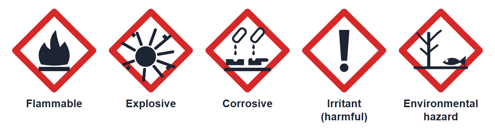
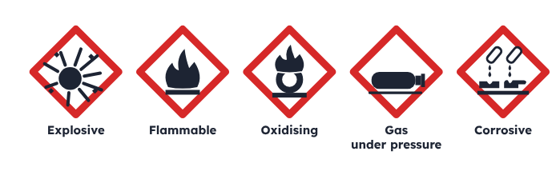
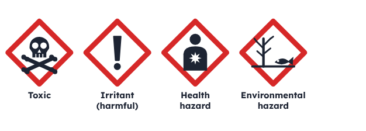

M1 Lesson 1 · Safety rules and hazard symbols
1▶️ Watch Watch once. Then pause and say the key idea in your own words. | 2✏️ Train in your coursebook Writing it yourself is what makes it stick. | 3🎯 Check No notes first. Getting it wrong now is how you get it right later. |
📘 COURSEBOOK Pages 9–11 Sections 1.1 and 1.2  |
✅ Mark it with the answer book. coursebook pages · not in this preview 📙 Before your test · 2 tasks more in your Workbook, pages 5–8. Not part of this check. |


The 12 safety rules (Coursebook page 8)
1 Wait for your teacher: Enter the lab, touch equipment and start work only when your teacher says so. Never go into the prep room or chemical store.
2 Read the method first: Know every step before you start. If you missed the instructions, ask your teacher; do not copy others.
3 Wear safety goggles: Whenever chemicals, heating or glassware are used, until everyone has finished.
4 Hair, clothes and shoes: Tie back long hair, tuck in ties and loose clothing, and wear closed shoes.
5 Bags away, aisles clear: Keep bags under the bench or at the side of the room. Walk; never run or play.
6 No food, no tasting: Never eat, drink or chew gum in the lab, and never taste anything.
7 Hands off chemicals: Use a spatula, never your fingers. Keep your hands away from your face and wash them after the practical.
8 Waft, never sniff: To smell a substance, wave a little of the vapour towards your nose with your hand.
9 Point it away: Point a test tube you are heating away from yourself and everyone else.
10 Report everything: Tell your teacher at once about any spill, breakage, cut or burn. Sweep broken glass into the broken-glass bin.
11 Know the safety equipment: Know where the eyewash station, fire blanket, fire extinguisher and exits are before you start.
12 Clean up: Dispose of chemicals as your teacher tells you (not down the sink unless told), turn off taps and gas, and put everything away.
If there is an accident (Coursebook page 8)
Tell your teacher straight away, even if it seems small.
Chemical in your eye: rinse it at the eyewash station with running water for at least 10 minutes.
Chemical on your skin: rinse with plenty of cold water.
Small burn: hold it under cold running water.
Clothing on fire: stop, drop and roll, or your teacher uses the fire blanket.
Definitions to learn: hazard symbols (Coursebook page 10)
Flammable: A substance that can easily ignite and cause fires.
Explosive: Causes explosion if exposed to heat, shock or friction.
Corrosive: A substance that has the potential to cause severe harm to living tissue and corrode metals.
Irritant: Causes irritation to eyes, skin or respiratory system.
Environmental hazard: A substance that can cause harm to the environment, especially aquatic ecosystems.
The check-in comes after it